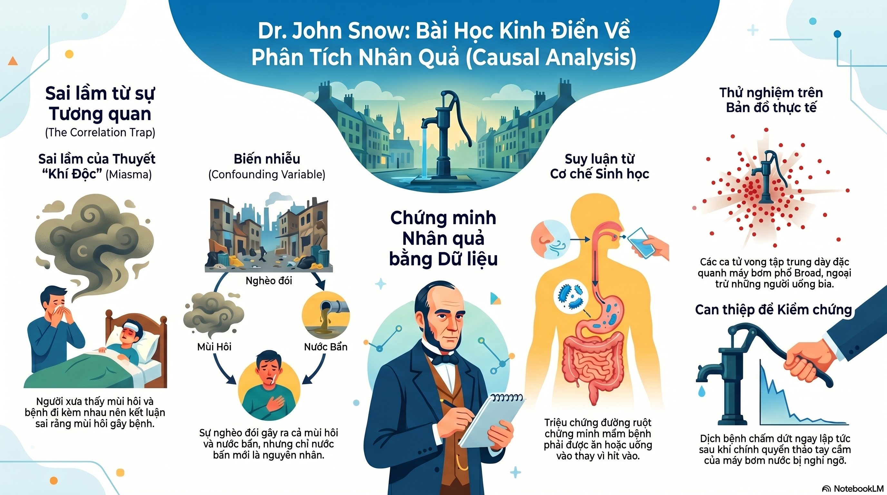
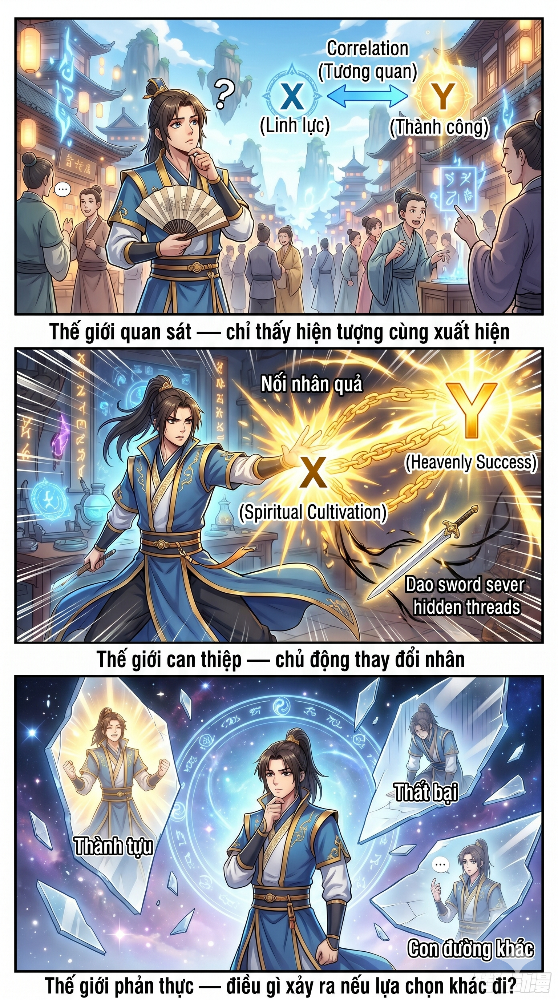
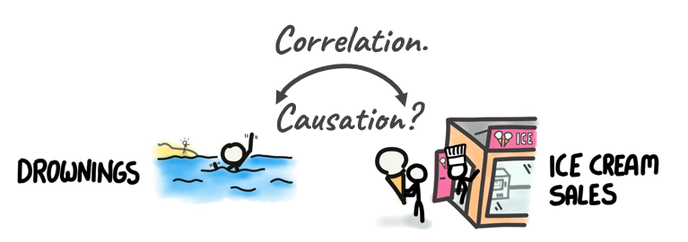
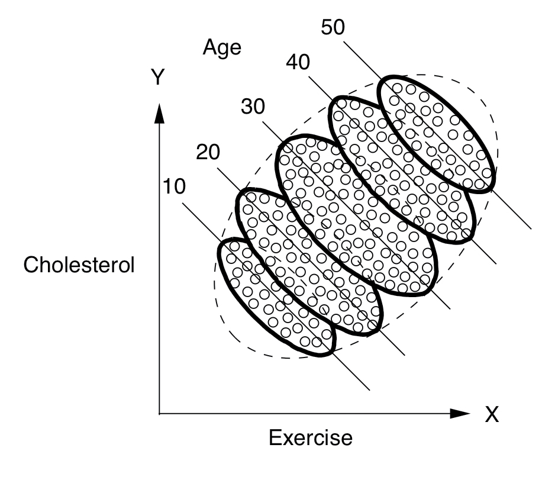
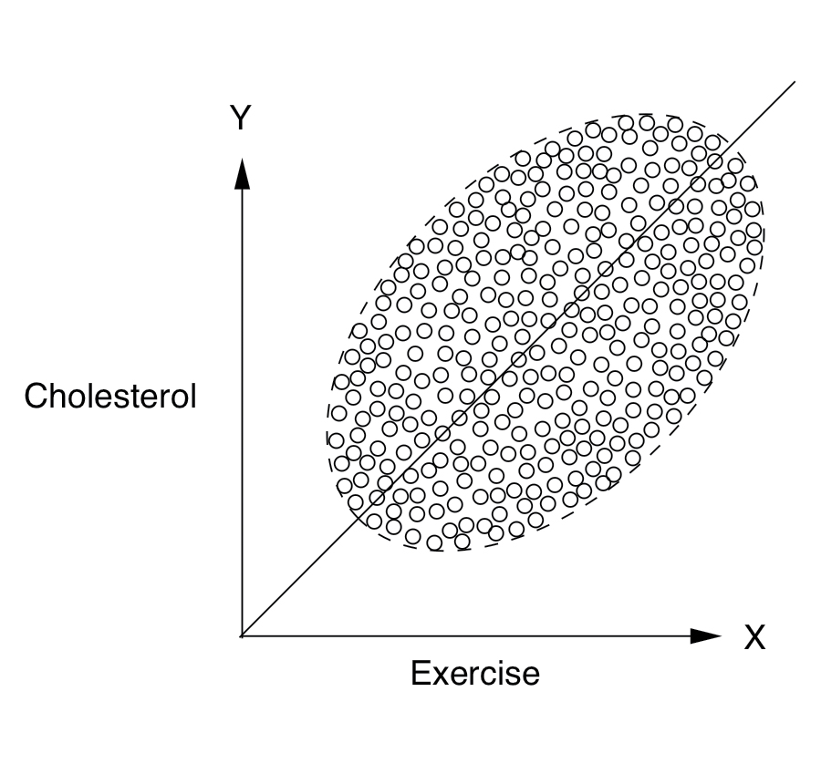
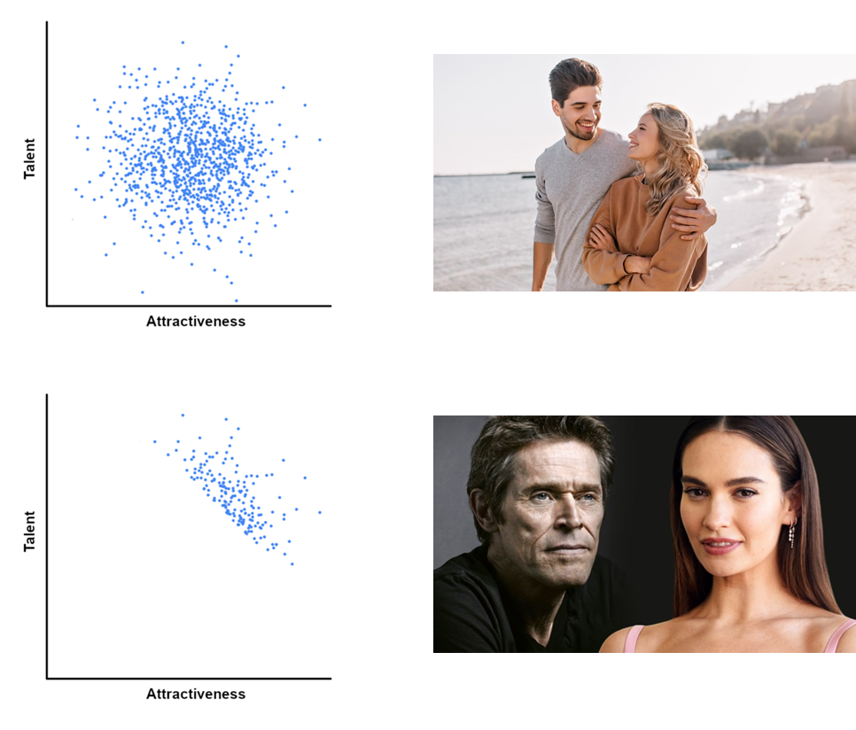
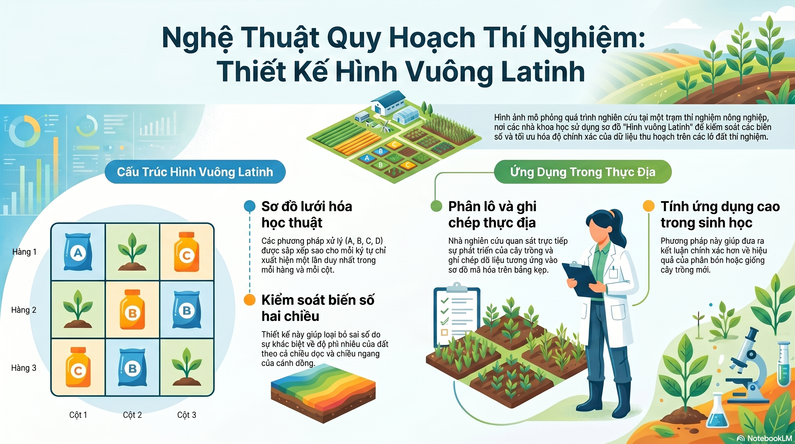

8 Phân tích nhân quả
Phân tích nhân quả giải quyết các câu hỏi như sau:
- Một phương pháp điều trị nhất định hiệu quả như thế nào trong việc ngăn ngừa một căn bệnh?
- Luật thuế mới đã khiến doanh số bán hàng của chúng ta tăng lên, hay đó là do chiến dịch quảng cáo?
- Chi phí chăm sóc sức khỏe do béo phì gây ra là bao nhiêu?
- Hồ sơ tuyển dụng có thể chứng minh một chủ lao động có tội trong chính sách phân biệt giới tính không?
- Tôi chuẩn bị nghỉ việc. Tôi có nên không?
Câu chuyện về Bác sĩ John Snow và đại dịch tả năm 1854 tại London là một trong những ví dụ kinh điển nhất để minh họa cho phân tích nhân quả.

Bài học về phân tích nhân quả từ câu chuyện
- Dữ liệu không biết nói dối, nhưng nó có thể đánh lừa: Nếu chỉ nhìn vào bản đồ nghèo đói và mùi hôi, chúng sẽ tin vào thuyết khí độc.
- Cần một giả thuyết về cơ chế: Đừng chỉ tìm các mẫu (patterns), hãy hỏi “Tại sao nó lại hoạt động như vậy?”.
- Thử nghiệm là bằng chứng đanh thép nhất: Thay đổi nguyên nhân (nguồn nước) và quan sát kết quả (số ca bệnh) là cách duy nhất để khẳng định quan hệ nhân quả.
8.1 Ba cấp độ của phân tích nhân quả

Nấc thang 1: Liên đới (Association) (Quan sát): Liên quan đến việc xác định các quy luật trong quan sát và đưa ra dự đoán dựa trên dữ liệu thụ động (ví dụ: P(dùng chỉ nha khoa | kem đánh răng)).
- Thống kê và học máy (machine learning) hiện nay (bao gồm cả học sâu (deep learning)) hoạt động ở cấp độ này, khớp các hàm số vào dữ liệu mà không có một mô hình thực tại.
Nấc thang 2: Can thiệp (Intervention) (Hành động): Liên quan đến việc dự đoán tác động của những thay đổi có chủ đích đối với môi trường (ví dụ: P(dùng chỉ nha khoa | do(kem đánh răng))).
- Các câu hỏi về can thiệp không thể được trả lời chỉ bằng dữ liệu thụ động; chúng yêu cầu một mô hình nhân quả hoặc các thử nghiệm có kiểm soát.
Nấc thang 3: Phản thực tế (Counterfactuals) (Tưởng tượng): Liên quan đến suy luận và tưởng tượng các kịch bản “nếu-thì” bằng cách so sánh thế giới thực với một thế giới giả định.
- Cấp độ này là cơ sở của ý thức con người, trách nhiệm đạo đức và các lý thuyết khoa học.
8.2 Suy luận nhân quả
Suy luận nhân quả (Causal inference) là quá trình suy luận các tác động của bất kỳ phương pháp điều trị (treatment), chính sách, can thiệp (intervention) hoặc hành động nào. Nó vượt xa sự liên đới (association) đơn thuần để hiểu cách một biến \(X\) thực sự ảnh hưởng đến một biến khác \(Y\) như thế nào.
“Câu chuyện đằng sau dữ liệu cũng quan trọng như chính bản thân dữ liệu đó.” — Judea Pearl
Suy luận nhân quả cung cấp các công cụ để hiểu “câu chuyện” này, cho phép chúng ta xác định các mối quan hệ nguyên nhân - kết quả thay vì chỉ là những sự liên đới ngẫu nhiên.
8.3 Tương quan không đồng nghĩa với Nhân quả
Nguyên lý cơ bản là tương quan (correlation) không đồng nghĩa với nhân quả (causation).
Tương quan ảo và Nguyên nhân chung

Ví dụ, doanh số bán kem và tỷ lệ đuối nước thường có tương quan rất cao. “Câu chuyện” đằng sau sẽ tiết lộ một nguyên nhân chung (common cause): Thời tiết. Vào những ngày nóng, mọi người vừa mua nhiều kem hơn, vừa đi bơi nhiều hơn. Bằng cách hiểu cấu trúc này, chúng ta nhận ra rằng việc kiểm soát (controlling) yếu tố thời tiết sẽ loại bỏ tương quan ảo.
8.4 Các nghịch lý trong phân tích dữ liệu
Dữ liệu đôi khi có thể biểu hiện theo những cách trái ngược với trực giác, dẫn đến những “ảo giác phân tích”. Hai trong số các ví dụ nổi tiếng nhất là Nghịch lý Simpson (Simpson’s Paradox) và Nghịch lý Berkson (Berkson’s Paradox).
Nghịch lý Simpson
Nghịch lý Simpson (Simpson’s Paradox) xảy ra khi một xu hướng xuất hiện trong các nhóm dữ liệu khác nhau sẽ biến mất hoặc đảo ngược khi các nhóm này được kết hợp lại.
Nghịch lý này minh họa sự nguy hiểm của việc kết luận về một tổng thể dựa trên dữ liệu chưa được phân nhóm, đặc biệt khi có các yếu tố gây nhiễu (confounders) đang che giấu cơ chế thực sự. Để hiểu và tránh nghịch lý này, chúng ta cần phân tích dữ liệu một cách có cấu trúc, xem xét các nhóm con một cách riêng biệt trước khi tổng hợp kết quả.


Nghịch lý Berkson
Nghịch lý Berkson (Berkson’s Paradox) mô tả một tình huống mà một tiểu quần thể cho thấy một xu hướng đặc điểm mà quần thể chung không có.
Một ví dụ điển hình là mối quan hệ giữa Tài năng (Talent) và Sự hấp dẫn (Attractiveness) ở những người nổi tiếng. Trong quần thể chung, những đặc điểm này có thể hoàn toàn độc lập. Tuy nhiên, bởi vì để trở thành người nổi tiếng thường đòi hỏi phải hoặc rất tài năng hoặc rất hấp dẫn (hoặc cả hai), tiểu quần thể những người nổi tiếng sẽ cho thấy một tương quan âm ảo: nếu một người nổi tiếng không hấp dẫn, họ có khả năng cực kỳ tài năng và ngược lại.

8.5 Framework kết quả tiềm năng (Potential Outcomes Framework)
Ký hiệu
Xét một cá nhân \(i\) đang bị đau đầu. Chúng ta muốn biết tác động của việc uống thuốc (\(T=1\)) so với không uống thuốc (\(T=0\)).
- \(T\): Biến can thiệp quan sát được (Observed treatment).
- \(Y\): Kết quả quan sát được (Observed outcome).
- \(Y_i(1)\): Kết quả tiềm năng nếu cá nhân đó nhận can thiệp.
- \(Y_i(0)\): Kết quả tiềm năng nếu cá nhân đó không nhận can thiệp.
Tác động can thiệp cá thể (Individual Causal Effect) cho đơn vị \(i\) được định nghĩa là: \[Y_i(1) - Y_i(0)\]
Vấn đề cơ bản của Suy luận nhân quả
Chúng ta hầu như chỉ có thể quan sát được một trong các kết quả tiềm năng cho một cá nhân cụ thể. Nếu họ uống thuốc, chúng ta thấy \(Y_i(1)\) (cái thực tế (factual)); chúng ta không thể thấy \(Y_i(0)\) (cái đối thực (counterfactual)).
Bởi vì chúng ta không thể quan sát cả hai kết quả cho cùng một người tại cùng một thời điểm, chúng ta không thể tính toán trực tiếp các tác động nhân quả cá thể.
8.6 Ước lượng tác động nhân quả
Vì các tác động cá thể là không thể quan sát được, chúng ta tập trung vào các số liệu ở cấp độ quần thể.
Tác động can thiệp trung bình
Tác động can thiệp trung bình (Average Treatment Effect - ATE) là sự khác biệt kỳ vọng giữa các kết quả tiềm năng trên toàn bộ quần thể:
\[ATE = \E[Y_i(1) - Y_i(0)] = \E[Y(1)] - \E[Y(0)]\]
Trong trường hợp này, ATE không đơn giản là sự khác biệt giữa các giá trị trung bình có điều kiện:
\[\E[Y(1)] - \E[Y(0)] \neq \E[Y|T=1] - \E[Y|T=0]\]
Vế trái đại diện cho quan hệ nhân quả (phép toán \(do\)), trong khi vế phải đại diện cho sự liên đới.
Thử nghiệm ngẫu nhiên có đối chứng

Trong một Thử nghiệm ngẫu nhiên có đối chứng (Randomized Controlled Trials - RCTs), tiêu chuẩn vàng trong nghiên cứu, người làm thí nghiệm phân bổ ngẫu nhiên các đối tượng vào nhóm can thiệp và nhóm đối chứng. Điều này đảm bảo rằng:
- Can thiệp \(T\) không có nguyên nhân nhân quả nào khác (loại bỏ nhiễu).
- Các nhóm là tương đương (có tính hoán đổi).
Trong một RCT, liên đới chính là nhân quả:
\[\E[Y(1)] - \E[Y(0)] = \E[Y|T=1] - \E[Y|T=0]\]
Xét một ví dụ đơn giản về thử nghiệm RCT: tác động của \(T\) đến \(Y\) trong một quần thể 6 người.
| \(i\) | \(T\) | \(Y\) | \(Y(1)\) | \(Y(0)\) | \(Y(1) - Y(0)\) |
|---|---|---|---|---|---|
| 1 | 0 | 0 | ? | 0 | ? |
| 2 | 1 | 1 | 1 | ? | ? |
| 3 | 1 | 0 | 0 | ? | ? |
| 4 | 0 | 0 | ? | 0 | ? |
| 5 | 0 | 1 | ? | 1 | ? |
| 6 | 1 | 1 | 1 | ? | ? |
Nhóm 1: {1,4,5}, nhóm 2: {2,3,6}. Ta có:
- \(\E[Y|T=1] = (1+0+1)/3 = 2/3\)
- \(\E[Y|T=0] = (0+1+0)/3 = 1/3\)
- \(ATE = 2/3 - 1/3 = 1/3\)
Trong trường hợp này, \(\E[Y|T=1] - \E[Y|T=0] = ATE\).
Điều kiện có thể quan sát
Để ước lượng ATE trong các tình huống không thể thực hiện RCT, chúng ta cần các điều kiện bổ sung.